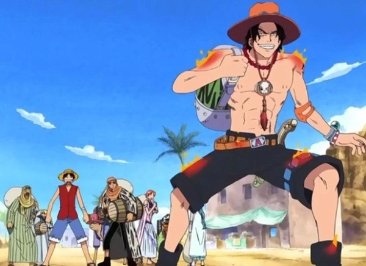
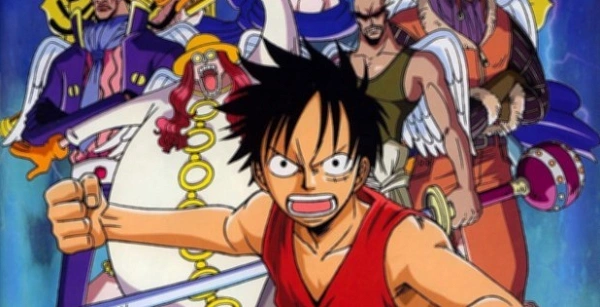
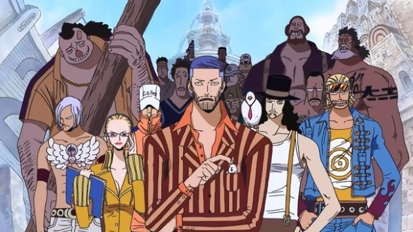
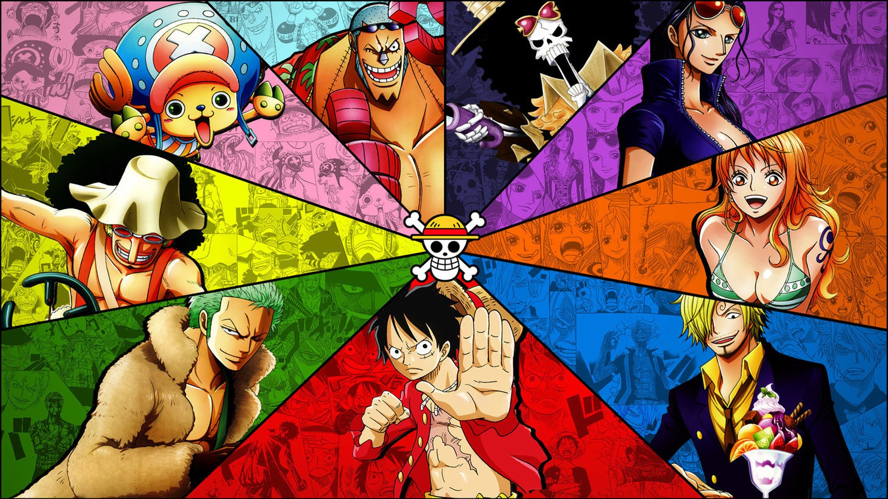
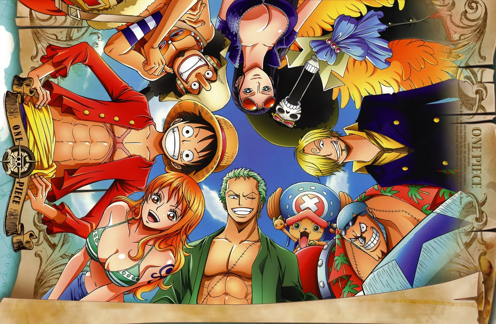
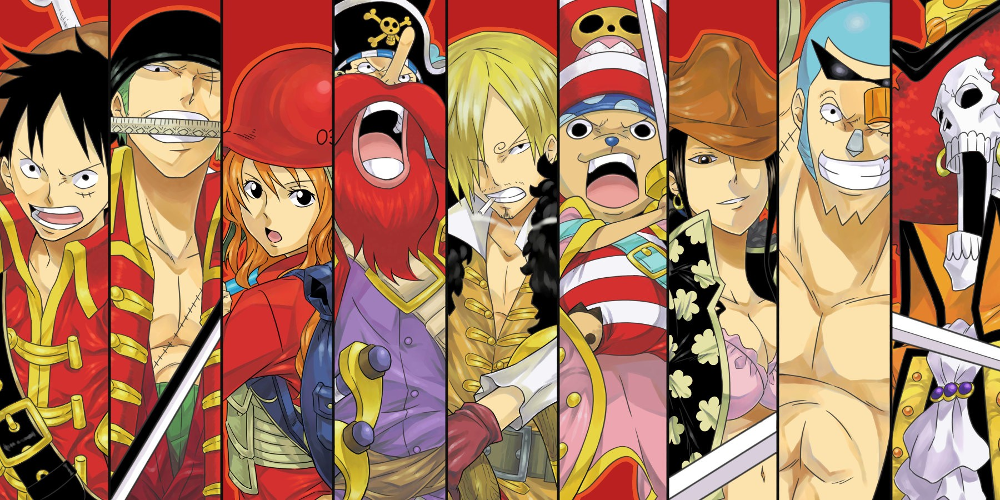
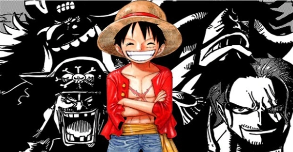

img

-
 Começamos pela saga que apresentou Luffy ao mundo, a chamada Saga East Blue.
Ela mostra o personagem ainda criança vivendo em East Blue e no início do
recrutamento de tripulantes para ele caçar o One Piece e tentar se tornar o
Rei dos Piratas.
Começamos pela saga que apresentou Luffy ao mundo, a chamada Saga East Blue.
Ela mostra o personagem ainda criança vivendo em East Blue e no início do
recrutamento de tripulantes para ele caçar o One Piece e tentar se tornar o
Rei dos Piratas.
-  Na segunda saga, intitulada Alabasta (ou Baroque Works) Luffy e sua tripulação segue na busca pelo One Piece, na tentativa do rapaz se tornar o Rei dos Piratas. Entretanto, eles precisam ajudar a Nefertari Vivi a chegar na sua pátria antes que uma guerra se inicie. O problema é que uma organização mal intencionada vai fazer de tudo para impedir Luffy e seus amigos de chegar em Alabasta.
-  Na terceira saga de One Piece, intitulada Skypieia, os Chapéus de Palha seguem em sua aventura. Porém, Luffy e os outros se deparam com uma terra cheia de mistérios e envolvida em uma guerra que pode destruir de uma vez Skypiera. Esse é um dos arcos que já começam com fillers logo no início da saga.
-  Water 7 é a quarta saga de One Piece, conhecia também por Saga Enies Lobby ou Saga CP9. Desta vez, os piratas já estão em mar aberto novamente e irão enfrentar alguns perigos em sua empreitada na busca do One Piece. Um deles é o trapaceiro Foxy, além de um dos três Mirantes da Marinha, chamado Aokiji. Luffy precisa chegar a Water 7 para encontrar um carpinteiro que se junte a sua tripulação e conserte seu navio.
-
 Na quinta saga do anime, Luffy e os tripulantes acabam desembarcando em uma ilha fantasma
chamada Thriller Bark. No local, um estranho personagem usa a sombra de Luffy para reviver Oars,
um lendário gigante. Com a ajuda de Brook, um esqueleto, Luffy e os outros Chapéus de Palha terão
que enfrentar Oars e aquele que lhe trouxe de volta a vida.
Na quinta saga do anime, Luffy e os tripulantes acabam desembarcando em uma ilha fantasma
chamada Thriller Bark. No local, um estranho personagem usa a sombra de Luffy para reviver Oars,
um lendário gigante. Com a ajuda de Brook, um esqueleto, Luffy e os outros Chapéus de Palha terão
que enfrentar Oars e aquele que lhe trouxe de volta a vida.
-
 Conhecida também como Saga Cúpula da Guerra, a Guerra de Marineford marca o final da primeira metade do anime.
Neste ponto da trama, Luffy e os outros Piratas do Chapéu de Palha são separados no Arquipélago de Sabaody.
E é aqui que as coisas parecem se tornar um pouco mais difíceis para Luffy e os outros.
Conhecida também como Saga Cúpula da Guerra, a Guerra de Marineford marca o final da primeira metade do anime.
Neste ponto da trama, Luffy e os outros Piratas do Chapéu de Palha são separados no Arquipélago de Sabaody.
E é aqui que as coisas parecem se tornar um pouco mais difíceis para Luffy e os outros.
img 2


img 3

-
 Conhecida também como Saga Ilha dos Homens-Peixe, ela apresenta a trama depois de
2 anos do timeskip (avanço de tempo). Os Chapéus de Palha se reencontram no Arquipélago Sabaody
e rumam para o Novo Mundo, mas para isso eles precisam passar pela Ilha dos Tritões e enfrentar
alguns piratas que estão por ali.
Conhecida também como Saga Ilha dos Homens-Peixe, ela apresenta a trama depois de
2 anos do timeskip (avanço de tempo). Os Chapéus de Palha se reencontram no Arquipélago Sabaody
e rumam para o Novo Mundo, mas para isso eles precisam passar pela Ilha dos Tritões e enfrentar
alguns piratas que estão por ali.
-
Finalmente Luffy e sua tripulação conseguem chegar ao Novo Mundo, porém eles acabam se deparando
com um antigo laboratório do Dr. Vegapunk e encontram experimentos ilegais de Caesar Clown.
Luffy acaba formando alianças e descobre uma conspiração existente na ilha de Dressrosa.
-  Chegamos a saga mais atual de One Piece, intitulado Yonkou. Uma aliança chamada Ninja-Pirata-Mink-Samurai é formada para derrubar Kaido. É quando Luffy entra em ação, se envolve com um Yonko chamado Big Mom e precisa embarcar numa missão de resgate de seu amigo, Sanji.